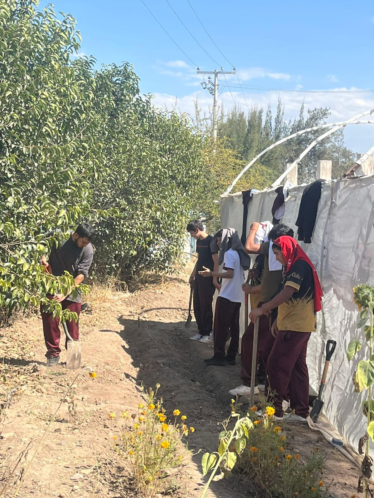
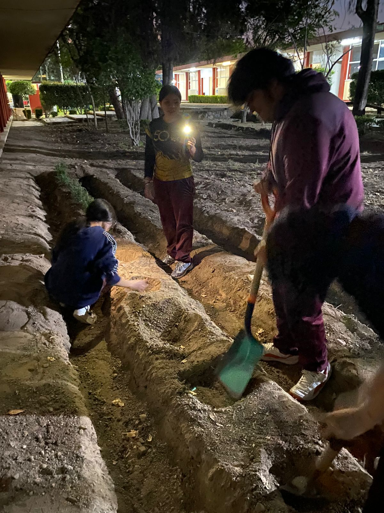
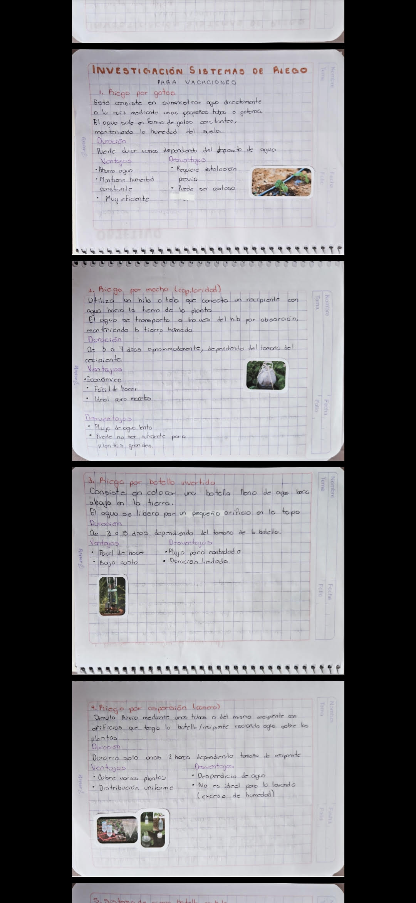
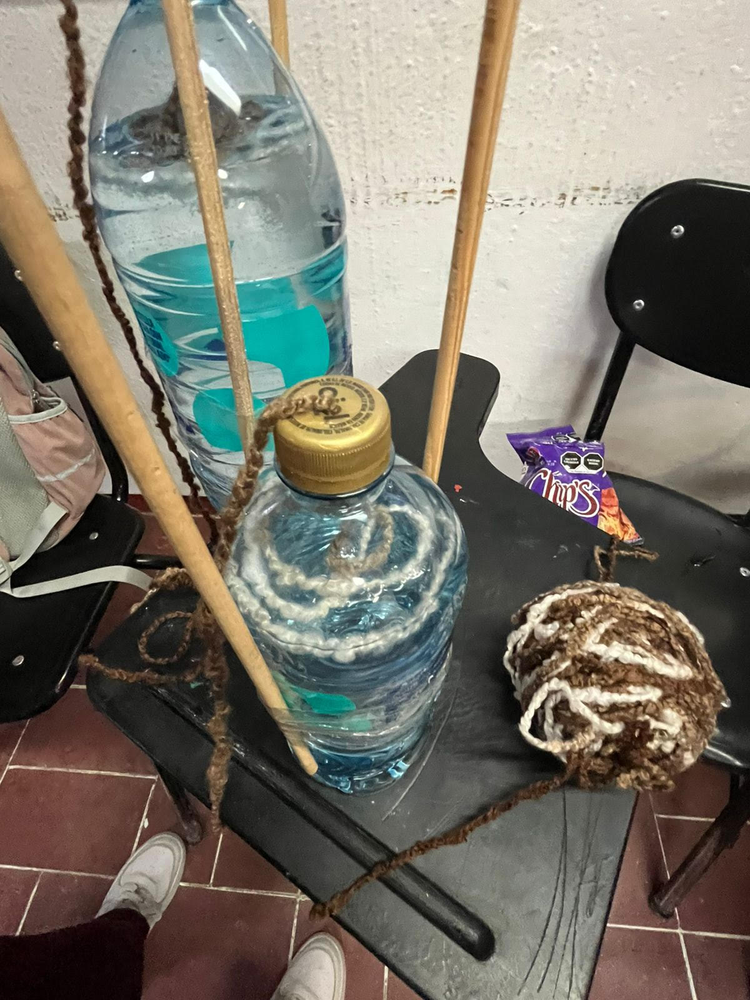
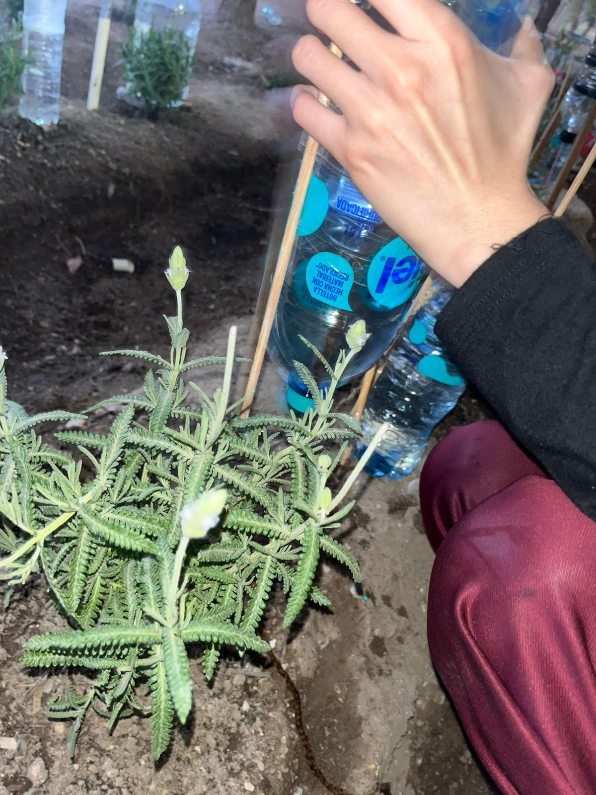
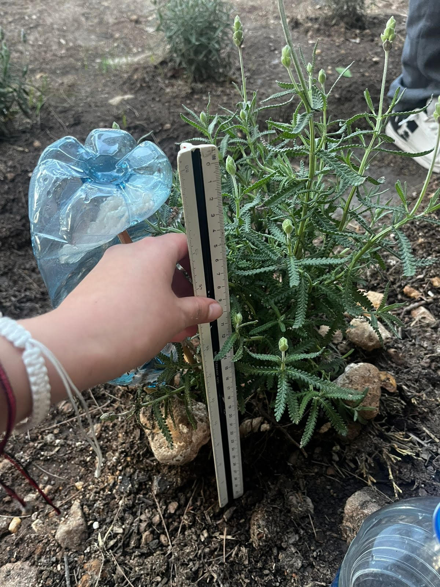
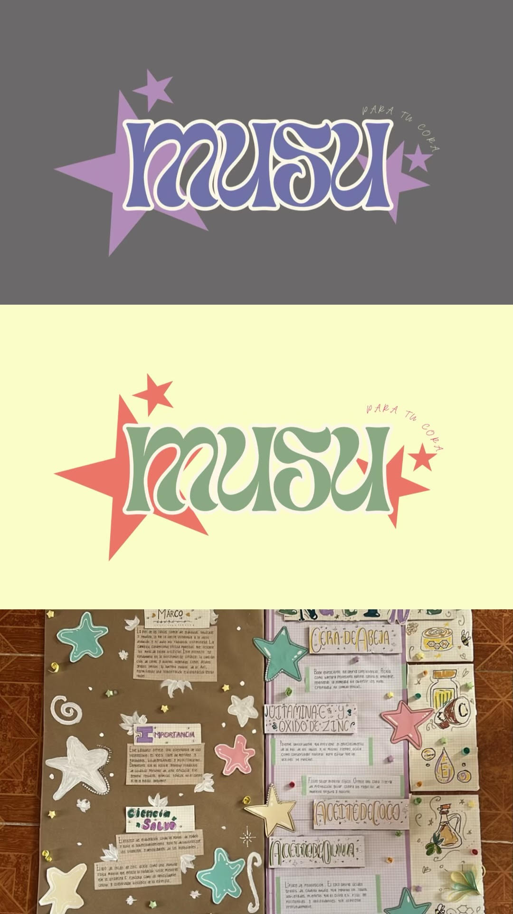
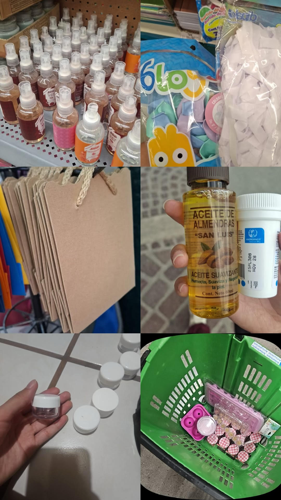
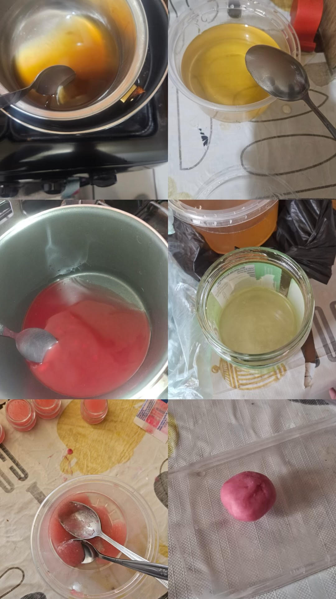
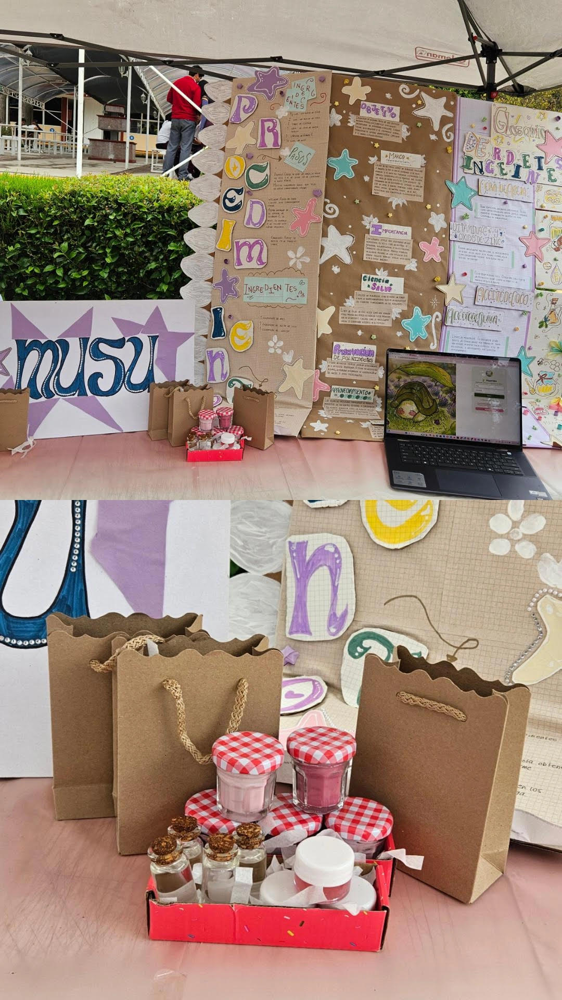

Cultivando un Futuro Sustentable
Memoria Técnica y Registro de Evidencias del Huerto Escolar
🎯 Objetivo del Proyecto
Diseñar, implementar y mantener un huerto escolar sustentable enfocado en la producción de lavanda. Se busca aprender dinámicas agroecológicas mediante el trabajo en equipo, la optimización de recursos hídricos y el desarrollo de un modelo de negocio innovador basado en las propiedades de esta planta medicinal y aromática.
💡 Justificación
El cultivo de lavanda representa una excelente oportunidad pedagógica y productiva en la escuela. Es una planta resistente que requiere cuidados específicos de riego y suelo, sirviendo como base para estudiar la botánica práctica. Además, su potencial de transformación permite al equipo incursionar en proyectos de emprendimiento sustentable, dándole un valor agregado a la materia prima cosechada.
👥 Integrantes del Equipo
El presente proyecto es coordinado y ejecutado por los siguientes alumnos:
📸 Imágenes de Equipo


⏳ Proceso de Desarrollo del Proyecto
A continuación se detalla cronológicamente cada uno de los pasos realizados por el equipo, desde la preparación del suelo hasta la consolidación del producto final:
1. Realización de surcos

2. Plantación de la planta de lavanda

3. Investigación del sistema de riego

4. Realización del sistema de riego

5. Aplicación del sistema de riego

6. Medición de lavandas y aplicación de abono

7. Investigación de producto innovador y creación de marca (Nombre, Slogan, Logo, Carteles y Material Didáctico)

8. Adquisición de materiales para hacer el producto

9. Realización del producto

10. Presentación del producto innovador

📖 Marco Teórico e Investigación
El sustento conceptual que respalda las decisiones de campo e ingeniería tomadas por el equipo:
1. El Cultivo de Lavanda (Lavandula)
La lavanda es una planta perenne de la familia de las lamiáceas. Destaca por su alta resistencia a las sequías una vez establecida, requiriendo suelos con excelente drenaje y un pH de neutro a ligeramente alcalino para evitar la asfixia radicular.
2. Eficiencia hídrica y Sistemas de Riego
La lavanda es sumamente sensible al exceso de humedad. La implementación de sistemas de riego controlados (como el riego por goteo o localizado) permite suministrar la cantidad exacta de agua directamente a la base de la planta, minimizando la evaporación y previniendo la proliferación de hongos fitopatógenos.
3. Emprendimiento Sustentable y Valor Agregado
El diseño de productos derivados del huerto escolar (como aceites esenciales, jabones, aromatizantes o saquitos relajantes) fomenta la economía circular. El proceso incluye desde la identidad gráfica (logo y slogan) hasta el empaque ecológico, promoviendo habilidades comerciales e innovadoras en el equipo.
🌱 Galería de Imágenes del Huerto
Fotografías adicionales de las lavandas y los resultados en el huerto escolar: